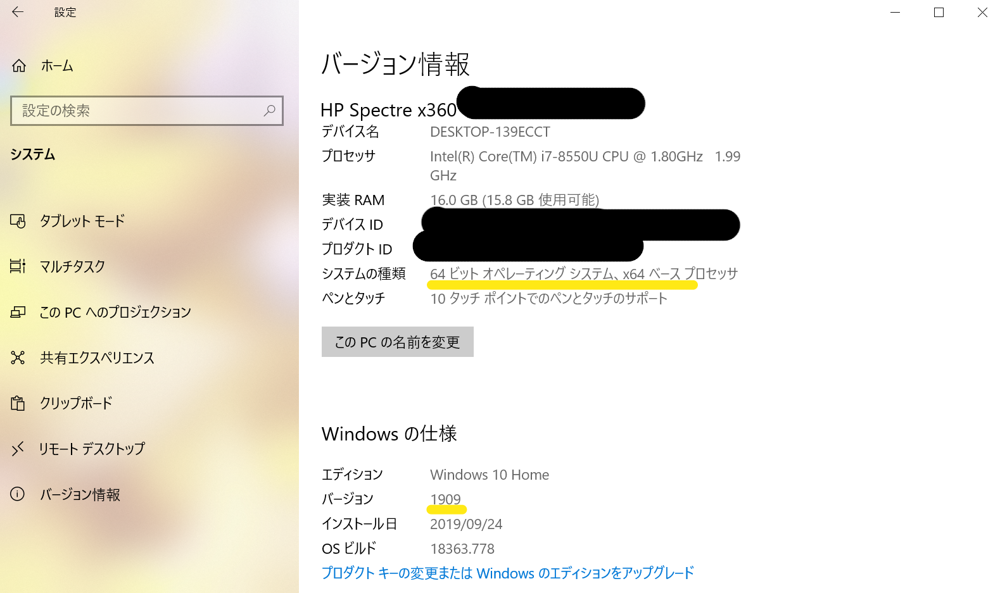

Lunatic電通生もっちゃんの部屋
はじめに & STEP 0 スペック・バージョンの確認
まずは、取り急ぎ作ったページのため、誤字・脱字などがありましたら、ごめんなさい。 また、デザインについては（お察し）レベルのため、この点に関するクレームはお控えください。
それでは、「情報基盤センターシステム利用開始手順 (学生/教育研究職員向け)」に記載されている手順を。自分なりに詳しく説明した解説を開始します。
まずは、自分のPCのスペックを確認します。今回はWindows10を使用して解説しますので。MacOSやLinuxの方はごめんなさい。 「スタートボタン⇒設定⇒システム⇒バージョン情報」と進んでください。
このように自分のパソコンの情報を知ることができます。私のパソコンは「64bit」「Windows 10 1909」のため、これにのっとって解説します。 ただし、「32bit」の方は、途中の説明文をすべて「32bit」に置き換えて頂ければ大丈夫です。Windowsのバージョンが1903より前の方は、Windowsのバージョンの更新をお願いします。（「スタートボタン⇒設定⇒更新とセキュリティ⇒Windows Update」）
Next -> STEP 1 FireFoxのダウンロード